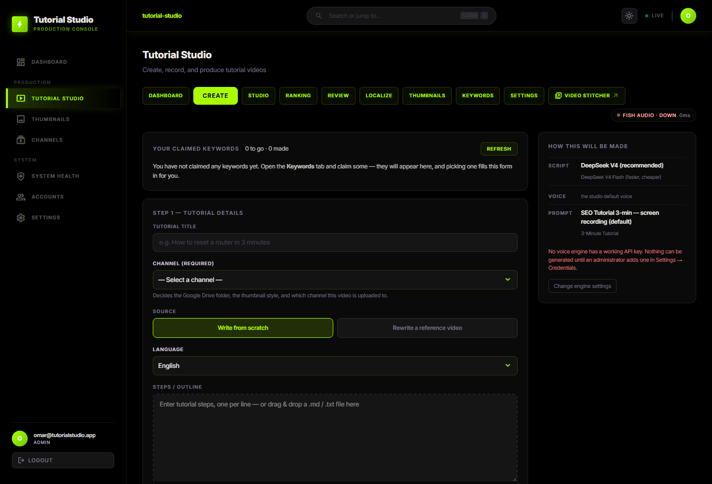
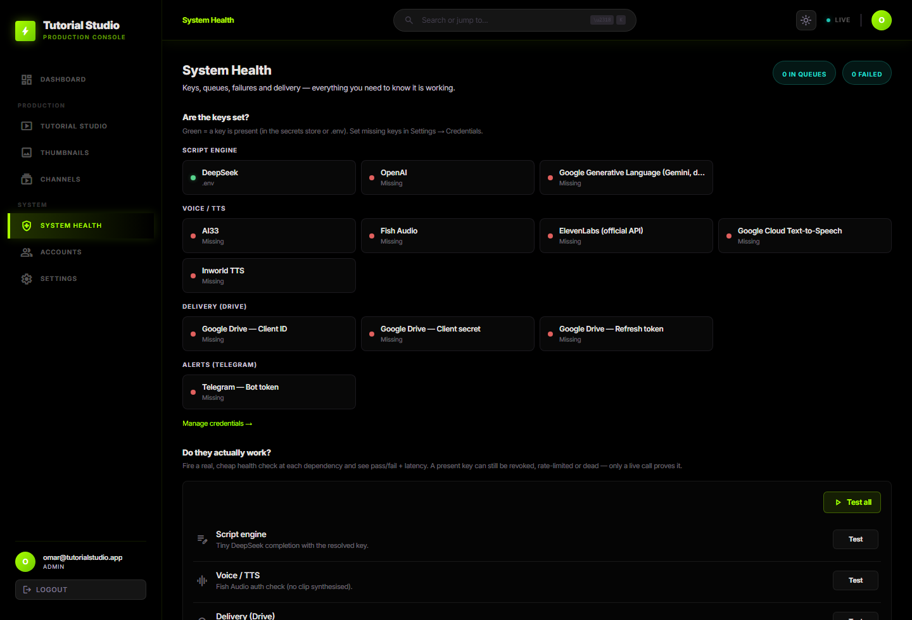
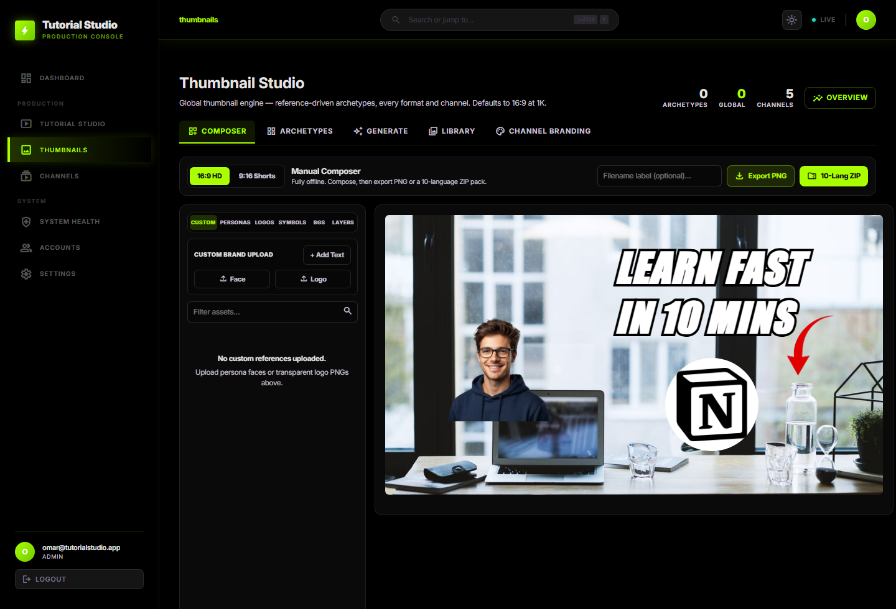

Real-time pipeline orchestration with instant script re-synthesis, multi-stage retries, and hardware-accelerated video take splicing.


Native multilingual voice synthesis with dedicated channel profiles, custom prompts, and automated Google Drive cloud delivery.
High-CTR YouTube thumbnail workstation with 71 app logos, 111 colored badges, 2.4x retina export, and 1-click brand preset templates.

Stop editing manually. Deploy the world's most powerful autonomous tutorial workstation.